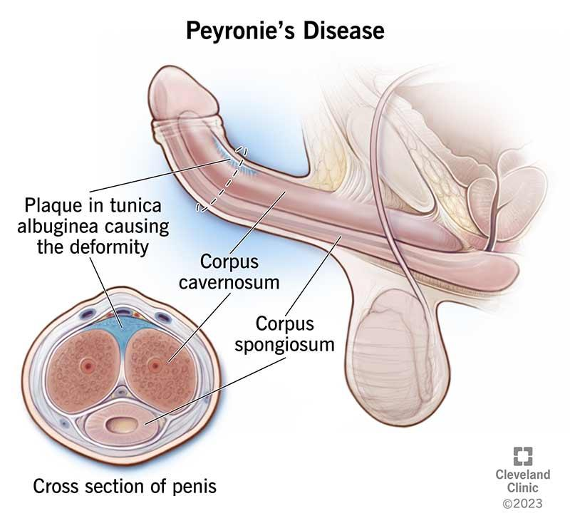

Erectile Dysfunction
Your next patient has presented to your General Practice complaining of erectile dysfunction. He is a known case of diabetes and is on insulin.
Task:
- Take history for 6 minutes
- You will be given PE findings on the screen at 6 minutes
- Explain your diagnosis and differentials to the patient
- Outline the desirable intervention
Key Importance / Association
Why erectile dysfunction is important
Erectile dysfunction is an early marker of cardiovascular disease.
- Erection is a vascular phenomenon
- Vasodilation → erection
- Vasodilation → erection
- People with erectile dysfunction have higher risk of cardiovascular disease
- Therefore, once a patient presents with ED:
- You start thinking about risk factors for cardiovascular disease
- You start thinking about risk factors for cardiovascular disease
Differentials (Big Picture Review)
Anatomical / Local causes
- Any anatomical problem can cause ED:
- Prostate problems:
- Prostate cancer
- Sometimes BPH
- Prostate cancer
- Pelvic surgery:
- Post-prostatectomy
- Post-prostatectomy
- Penis problems:
- Peyronie’s disease (rare but important)
- Peyronie’s disease (rare but important)
- Prostate problems:
Critical Clarification Early
Erectile Dysfunction vs Premature Ejaculation
Many patients misinterpret ED, so you must differentiate early:
- Erectile dysfunction
- Inability to maintain erection
- Unable to do penetration / doesn’t last long
- Inability to maintain erection
- Premature ejaculation
- Different condition
- Totally different treatment
- Different condition
Must ask early:
- “Can you describe what you mean by erectile dysfunction?”
- “Do you mean difficulty maintaining erection OR early ejaculation?”
Organic vs Psychogenic
- Although many people think ED is mostly psychogenic:
- Most erectile dysfunction has organic causes
- Most erectile dysfunction has organic causes
Organic Causes to Look For
1) Cardiovascular / Chronic conditions
- Cardiovascular disease / risk factors
- Chronic conditions like:
- Diabetes
- Hypertension
- Hyperlipidemia
- Sleep apnea
- Diabetes
- Lifestyle factors:
- Lack of exercise
- Obesity
- Smoking
- Lack of exercise
- Drugs
2) Hormonal
- Thyroid
- Testosterone deficiency
3) Neurological
- Neurological conditions are important
4) Medications
- Especially antidepressants
- SSRIs → classic example of sexual dysfunction
- SSRIs → classic example of sexual dysfunction
5) Prostate / cancer treatment
- Prostate cancer treatment
- Prostate problems
6) Peyronie’s disease
- Mentioned as a key condition to know
Investigations (Key Ones to Remember)
You will do investigations in these patients. Key ones:
- Hormonal tests
- TSH
- Androgen
- TSH
- Cardiovascular risk assessment
- Kidney function (chronic kidney disease)
- Lipids (hyperlipidemia)
- Sugar (diabetes)
- “And so on”
Physical Examination (Expected Components)
- Genitourinary examination
- Penis
- Testes
- Penis
- Full cardiovascular examination
- Neurological examination
- Because nerves are needed for erection
- Because nerves are needed for erection
Peyronie’s Disease (Important Condition)
- Plaque in shaft of penis
- Causes deformity
- Typical complaint:
- “Erection difficulties AND my penis looks deformed”

Management Overview
1) Treat cause + counseling
- Treat underlying cause such as:
- Uncontrolled diabetes
- Cardiovascular risk factors
- Too much alcohol
- Low testosterone
- Hypothyroidism
- Uncontrolled diabetes
- Sexual counseling (and so on)
2) Tablets
Examples:
- Viagra
- Tadalafil
- Vardenafil
- Sildenafil
3) Vacuum devices / rings
- If tablets don’t help:
- Vacuum devices
- Rings
- Vacuum devices
4) Injection
- Alprostadil
- Injection into penis before sex to induce erection
- Injection into penis before sex to induce erection
5) Implant
- If nothing works:
- Implant surgery (end of management)
- Implant surgery (end of management)
AMC-Focused Key Points
If patient is diabetic
- Modify medications / ensure diabetes control
- Make sure testosterone levels are good
- Address psychosocial issues
- Performance anxiety
- Psychiatric conditions → vicious cycle
- Performance anxiety
- Lifestyle modification:
- Cut down alcohol
- Better diet
- Exercise
- Losing weight
- Cut down alcohol
- These match cardiovascular risk factors
History Taking Structure
Opening
Open-ended question
- “How can I help you today?”
- “Tell me more about your sexual problems.”
Sensitivity + confidentiality
If patient struggles to open up:
- “I’ll just be asking you some sensitive questions today about your sex life, if that’s okay with you.”
- “Everything we discuss today together will be confidential.”
Address concerns
- Acknowledge patient concern about erectile dysfunction (as always)
Step 2: Explore the Erectile Dysfunction
Timing
- “How long have you had this problem?”
Frequency / Severity
- “Is it happening on and off or every time you have sex?”
Progression
- “Is it getting worse?”
Triggers
- “Have you noticed anything making it better or making it worse?”
Key Early Clarification Question
- “Can you describe what you mean by erectile dysfunction?”
- “Do you mean difficulty maintaining erection OR early ejaculation?”
- “Do you mean difficulty maintaining erection OR early ejaculation?”
Must be asked very early.
Two Quick Hormonal Guide Questions
1) Morning erections
- “Are you still having morning erections?”
- Normal process → normal testosterone pathway
- Normal process → normal testosterone pathway
2) Libido
- “Have you noticed any changes in your sexual desire?”
Differentials — History Format (Grouped)
Group 1: Vascular / Cardiovascular conditions
Examples emphasized:
- Diabetes
- Hypertension
Diabetes – 4 structured questions
- “When were you diagnosed with diabetes?”
- “What treatment are you on?”
- (stem says insulin)
- (stem says insulin)
- Compliance / monitoring:
- “Are you compliant?”
- “Are you using your insulin regularly?”
- “Are you having your regular follow-ups and blood tests with your GP/specialist?”
- “Are you compliant?”
- Complications (2 key ones):
- “Have you noticed any vision problems or blurring of vision?” (retinopathy)
- “Have you noticed any numbness in the legs?” (neuropathy)
- “Have you noticed any vision problems or blurring of vision?” (retinopathy)
Key concept
- If patient has one diabetic complication → high chance of another complication.
Other vascular risks
- “Have you ever been diagnosed with high blood pressure?”
- “High fats in your blood / high cholesterol?”
Group 2: Genital / GU causes
Peyronie’s
- “Have you noticed any deformity in your penis?”
Prostate disease (BPH / prostate cancer)
Ask a few LUTS questions (not full list):
- Nocturia:
- “Do you wake up in the middle of the night to pass urine? If yes, how many times?”
- “Do you wake up in the middle of the night to pass urine? If yes, how many times?”
- Obstructive:
- “Have you noticed a weak urine stream?”
- “Any dribbling?”
- “Have you noticed a weak urine stream?”
- Irritative:
- “Do you pass urine more frequently lately?”
- “Do you get that sudden urge to pass urine?”
- “Do you pass urine more frequently lately?”
Surgery
- “Have you ever had any surgeries on your stomach or your private parts?”
- Surgery can injure nerves → erectile dysfunction
- Surgery can injure nerves → erectile dysfunction
Group 3: Hormonal
- Already covered androgen deficiency questions:
- Libido
- Morning erections
- Libido
Thyroid
- “Have you had any weather preference lately?”
- “Any hot or cold intolerance?”
- “Any hot or cold intolerance?”
Group 4: Psychogenic / Psychological
Psychogenic can cause ED, and ED can cause anxiety/stress → works both ways.
Ask:
- “How’s your mood been lately?”
- “How’s your sleep been?”
- Stress:
- “Any stress at home?”
- “How is your relationship with your partner after having this problem?”
- “How is she reacting or handling this problem?”
- “Any stress at work?”
- “Do you study? Do you work?”
- “Any stress at home?”
Key discriminating question
- “Do you also have erection problems on masturbation?”
- Helps identify psychogenic component / partner-specific issues
- Helps identify psychogenic component / partner-specific issues
Group 5: Cardiovascular / Lifestyle risk factors
- Alcohol (long-term can interfere with erection)
- Drugs
- Smoking (vascular disease → ED)
- Medications
- Exercise / diet / weight:
- “Do you do any exercise?”
- “How is your diet?”
- “Are you overweight?”
- “Do you do any exercise?”
Remember: key point is ruling out cardiovascular risk factors.
Group 6: Other chronic conditions (Optional)
- For completeness:
- Sleep apnea:
- “Any snoring or gasping during sleep?”
- “Any snoring or gasping during sleep?”
- Hemochromatosis:
- “Any tanning of your skin?”
- “Any tanning of your skin?”
- Sleep apnea:
Cardiovascular Disease Symptoms (Must Ask)
Because ED is an early marker of cardiovascular disease:
- “Have you ever had any chest pain?”
- “Any shortness of breath on exercise?”
- “Have you ever had pain in your legs on walking?”
- Asked for peripheral vascular disease / peripheral arterial disease
- Asked for peripheral vascular disease / peripheral arterial disease
Medication Safety Key Point
Important interaction to remember:
- Nitrates + Viagra (sildenafil) don’t go well together
- Mentioned as discussed in MI case (medicine chapter four)
History Findings
Patient says:
- “I have diabetes and I also have hypertension.”
- “I usually don’t see my GP who’s treating my diabetes.”
- “My problem is maintaining erection.”
Physical Examination Findings
- Scrotal exam: normal
- DRE exam: normal
- Not structural Peyronie’s/BPH/prostate cancer cause
- Not structural Peyronie’s/BPH/prostate cancer cause
- Sensory loss in both legs:
- Diabetic sensory neuropathy
- Diabetic sensory neuropathy
- Urine dipstick:
- Positive glucose
- Suggests high blood sugar
- Positive glucose
Diagnosis Explanation (What they mean)
This station confused candidates initially because:
- Patient “already has erectile dysfunction”
- So you explain the cause of ED
Diagnosis
- Erectile dysfunction most likely due to uncontrolled diabetes
Explanation to patient
- High blood sugar damages:
- Blood tubes (blood vessels)
- Nerves
- Blood tubes (blood vessels)
- Damage to blood tubes in penis → erectile dysfunction
Differentials to Explain
- Any Chronic vascular disease can cause ED like:
- Hypertension
- High blood pressure
- High fats/high cholesterol
- Cardiovascular risk factors
- Hypertension
- Lifestyle / risk factors:
- Smoking
- Alcohol
- Drugs
- Some medications
- Overweight
- Unhealthy diet
- No exercise
- Smoking
- Hormonal:
- Testosterone/androgen deficiency
- Hypothyroidism
- Testosterone/androgen deficiency
- Penis/prostate:
- Peyronie’s disease
- BPH
- Prostate cancer
- Peyronie’s disease
- Psychogenic:
- Major depression
- Anxiety disorders
- Major depression
- Other:
- Obstructive sleep apnea
- Hemochromatosis
- Obstructive sleep apnea
Desirable Intervention
Main desirable intervention
Fix diabetes control.
What you tell the patient:
- Use insulin properly
- Regular blood checks
- Adjust dose as needed
- Lifestyle modification:
- Exercise
- Losing weight
- Healthy diet
- Cut down alcohol
- Cut down smoking
- Exercise
Most important:
- Good control of diabetes
Extra Bullet Points (If case changes next time)
1) Treat the cause
Examples:
- If BPH → treat BPH
- Prostate cancer → investigate/treat
2) Sexual counseling
- “I’ll send you and your partner for sexual counseling”
- Psychologist and so on
3) Pharmacological
- Viagra (Sildenafil)
- Tadalafil / Vardenafil also options
Viagra advice to patient
- Take before sex:
- Usually 1–2 hours before (depends on type)
- Usually 1–2 hours before (depends on type)
- Not spontaneous:
- Still need sexual stimulation
- Still need sexual stimulation
- Side effects (vasodilator effects):
- Postural hypotension
- Headache
- Nasal congestion
- Postural hypotension
4) Vacuum devices / rings
- If tablets don’t work
5) Alprostadil injection
- Done before sex
- Usually via urologist
6) Implant surgery
- Final step if everything fails
7) Cardiovascular risk assessment
- Manage cardiovascular risk factors
- Rule out cardiovascular disease